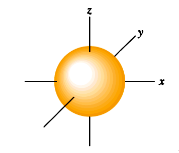
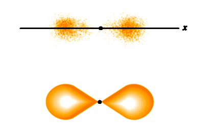
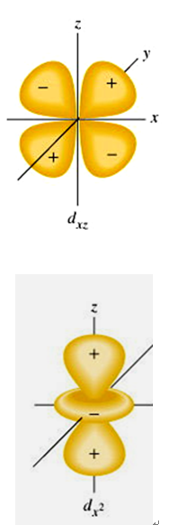
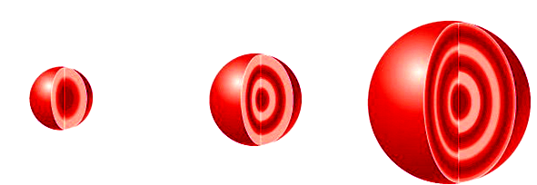
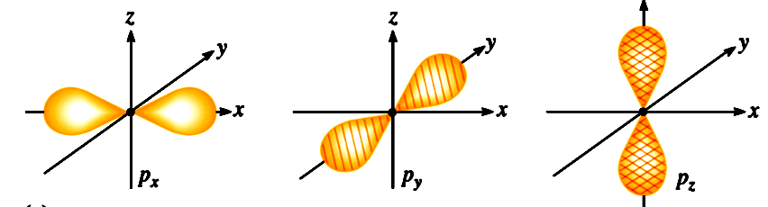
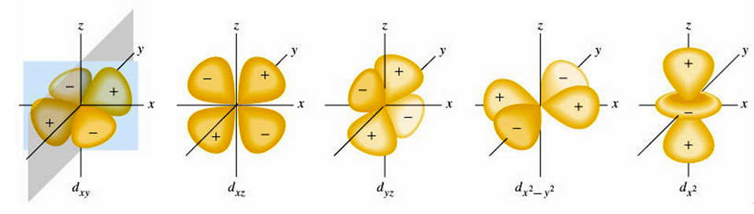

與量子數互動教學
拉塞福與波耳模型： 電子繞著一定的圓形軌道運行（如同行星繞太陽）。這種觀念無法解釋多電子原子的行為。
量子力學模型：
軌域是指在原子核外空間中，電子出現機率最高（通常大於 90% ~ 100%）的區域形狀。
電子雲機率分佈與徑向機率圖譜 (1s 軌域)
請滑動或觸控左側「電子雲」的紅色邊界，觀察右側機率圖譜的積分面積變化
數值：$n = 1, 2, 3, 4, ...$（正整數）
符號：K, L, M, N ...殼層
意義：決定電子的主要能量及電子與原子核間的平均距離。
也稱軌域量子數，用以描述主殼層下的「副殼層」(Subshell)。
數值範圍：$l = 0, 1, 2, ..., (n-1)$
（對於主量子數 $n$，共有 $n$ 個可能的 $l$ 值）
意義：決定了軌域的空間形狀。
同一個主殼層中，$l$ 值越大，其副殼層的能階越高（即 $s < p < d < f$）。
| $l$ 值 | 代號 | 軌域形狀 |
|---|---|---|
| 0 | s 軌域 | 球型 (Spherical) |
| 1 | p 軌域 | 啞鈴型 (Dumbbell) |
| 2 | d 軌域 | 花瓣型 |
| 3 | f 軌域 | 複雜型 |



數值範圍：$m = -l, ..., 0, ..., +l$
（對於給定的 $l$，共有 $2l + 1$ 個可能值）
意義：決定軌域在三維空間中的方向與個數。
註：在無外加磁場下，$m$ 值對軌域的大小、形狀、能量不影響。



數值：僅有 $+\frac{1}{2}$ 與 $-\frac{1}{2}$ 兩個可能值
意義：表示電子在空間中自轉的方向。
在量子力學中，電子除了在軌域中運動外，本身也帶有「自旋」的內在性質。
自旋會產生微小的磁場。根據包立不相容原理，同一個軌域內最多只能容納兩個電子，且它們的自旋方向必須相反，使得磁性互相抵消。
$s = +\frac{1}{2}$
自旋向上 ( $\uparrow$ )
$s = -\frac{1}{2}$
自旋向下 ( $\downarrow$ )
白色虛線與箭頭 (↑/↓)： 代表電子的自旋軸心與產生的磁極方向（自旋會使電子像一顆微小的電磁鐵，產生有方向性的微小磁場）。
黃色圓環與箭頭 (➔)： 代表電子的空間自轉方向（由自旋軸上方往下看：自旋向上為逆時針自轉，自旋向下為順時針自轉）。
| $n$ (主層) | $l$ (副殼層) | $m_l$ (磁量子數) | $m_s$ (旋量子數) | 副殼層電子容量 ($4l + 2$) |
主殼層電子容量 ($2n^2$) |
|---|---|---|---|---|---|
| 1 | 0 (1s) | 0 | $+\frac{1}{2}, -\frac{1}{2}$ | 2 | 2 |
| 2 | 0 (2s) | 0 | $+\frac{1}{2}, -\frac{1}{2}$ | 2 | 8 |
| 1 (2p) | $-1, 0, +1$ | 每個 $m_l$ 各有 $\pm\frac{1}{2}$ | 6 | ||
| 3 | 0 (3s) | 0 | $+\frac{1}{2}, -\frac{1}{2}$ | 2 | 18 |
| 1 (3p) | $-1, 0, +1$ | 每個 $m_l$ 各有 $\pm\frac{1}{2}$ | 6 | ||
| 2 (3d) | $-2, -1, 0, +1, +2$ | 每個 $m_l$ 各有 $\pm\frac{1}{2}$ | 10 | ||
| 4 | 0 (4s) | 0 | $+\frac{1}{2}, -\frac{1}{2}$ | 2 | 32 |
| 1 (4p) | $-1, 0, +1$ | 每個 $m_l$ 各有 $\pm\frac{1}{2}$ | 6 | ||
| 2 (4d) | $-2, -1, 0, +1, +2$ | 每個 $m_l$ 各有 $\pm\frac{1}{2}$ | 10 | ||
| 3 (4f) | $-3, -2, -1, 0, +1, +2, +3$ | 每個 $m_l$ 各有 $\pm\frac{1}{2}$ | 14 |
極重要規律總結： 主量子數為 $n$，則有 $n$ 種副殼層； 同一主殼層中共有 $n^2$ 個軌域； 最多可容納 $2n^2$ 個電子！
軌域能量僅由主量子數 $n$ 決定，同主殼層的軌域為簡併態 (Degenerate)
受同電性遮蔽 (Shielding) 影響，能量隨 $(n+l)$ 規則分裂與交錯
依量子力學，下列何種軌域不存在？
對於一個 3p 軌域上的電子，其四個量子數 $(n, l, m, s)$，哪一組可能存在？